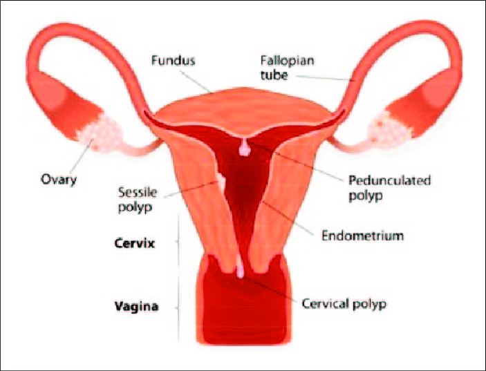

Uterine Polyps

CAUSES
The exact reason that polyps form is unknown, but swings in hormone levels may be a factor. Estrogen, which plays a role in causing the endometrium to thicken each month, also appears to be linked to the growth of uterine polyps.
SYMPTOMS
The symptoms of uterine polyps include the following:
- Irregular menstrual periods
-
Unusually heavy flow during menstrual periods
-
Bleeding or spotting between periods
-
Vaginal spotting or bleeding after menopause
-
Infertility
DIAGNOSIS
These tests may include the following:
- Transvaginal ultrasound: this is a procedure in which a slim handheld device called an ultrasound transducer is inserted in the vagina. The device emits sound waves, which provide an image of the interior of the uterus, including any irregularities that may be present.
-
Sonohysterography: this is a related procedure that may be performed after the transvaginal ultrasound. A sterile fluid is introduced into the uterus through a thin tube called a catheter. The fluid causes the uterus to expand, providing a clearer image of any growths within the uterine cavity during the ultrasound procedure.
-
Hysteroscopy: this may be used to either diagnose or treat uterine polyps. During this procedure, a doctor inserts a long, thin tube with a lighted telescope (hysteroscope) through the vagina and cervix into the uterus. The hysteroscope allows the physician to examine the inside of the uterus. Hysteroscopy is sometimes used in combination with surgery to remove the polyps.
-
Endometrial biopsy: the doctor uses a soft plastic instrument to collect tissue from the inner walls of the uterus. The sample is sent to the laboratory for testing to determine if any abnormalities are present.
-
Curettage: done in an operating room, this procedure can both diagnose and treat polyps. The doctor uses a long metal instrument called a curette to collect tissue from the inner walls of the uterus. The curette has a small loop on the end that allows the doctor to scrape tissue or polyps. The tissue or polyps that are removed may be sent to the laboratory for testing to determine if cancer cells are present.
TREATMENTS
Methods of treatment include the following:
- Medications
- Hysteroscopy
- Curettage
- Additional surgery may be necessary if a polyp cannot be removed using other methods, or if the polyps are cancerous. A hysterectomy, a surgical procedure in which the entire uterus is removed, may be necessary in cases where cancer cells are found in the uterine polyps.